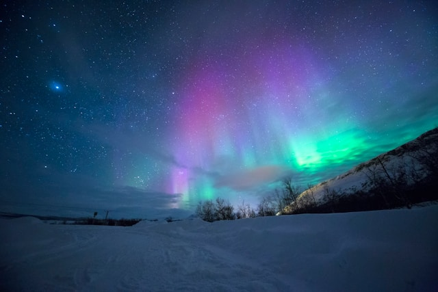
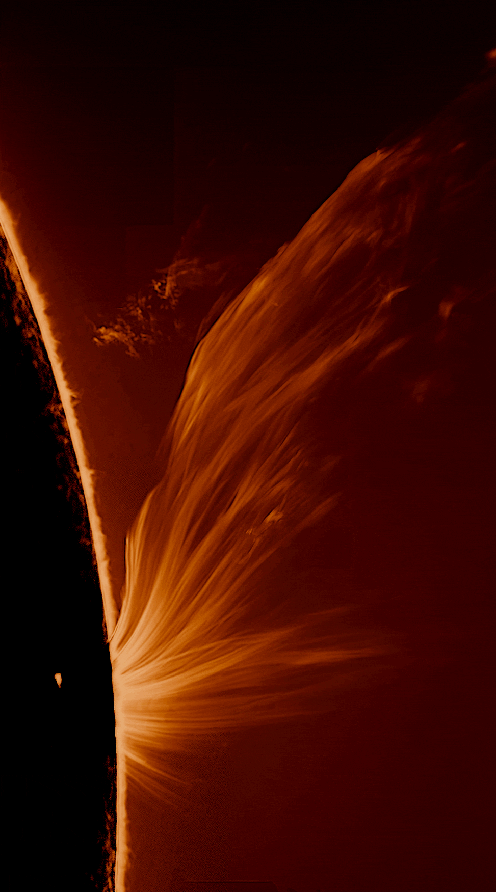

This chart shows the recorded CMEs from 2011 to 2019 by their speed in km/s. A normal range is 300-500km/s, with severe space weather events being classified at >2000km/s, as several lines on this graph are.


Coronal Mass Ejections are bursts of radiation produced naturally from the sun. Visually, these look like solar flares, explosions of plasma in a bubble pattern from our star. These eruptions travel millions of miles per hour, sometimes in the direction of Earth. When they do interact with Earth, we see a really cool natural phenomenon known as the aurora borealis, or the northern lights, when the particles interact with our atmosphere and our magnetic poles. However beautiful they may be, these CMEs can be dangerous, interfering with technology specially built on electromagnetic equipment.
A strong enough flare could knock out the entire world's internet, and fry any computers that are working when it hits. Home computers, digital storage, and car equipment are at risk, as well as life-saving electronics like pacemakers and vital monitors.
The world map on the side shows how much internet usage has grown since 2000. The shade of blue represents the percent of the population in each country using the internet. It displays that we as a global population are heavily reliant on this network today, and that this is a rapid and recent change. How confident are we, as people or scientists or astronomers, that the network is stable enough to depend on as much as we have it? How did it get to be as much of a crutch as it is?
Astronomers have come up with classifications for the solar flares involved in CMEs to better monitor and even create models to predict future flares and potential dangers to electronic infrastructure. Solar flares are sorted into five categories based on their speed and intensity, and classified with a number between 1 and 10 within those values. The M and X categories are the most dangerous, and therefore the most tracked and monitored. A, B, and C categories represent ambient radiation or pretty auroras. Classifying these flares allows for predictive models like SDO Benchmark, NOAA's data model called GOES, and many others published by academic institutions around the world.
Here, the solar flare records kept by NASA the past few years are displayed by type, showing the M category as the most frequently logged.
These sunbursts can sound scary, especially when such a huge factor in modern life is dependent on it. We are developing reliable prediction and action plans for these sunstorms, which will hopefully save us from an electronic catastrophe. Right now, the best we can do is raise awareness about potential catastrophes, keep working on these models, and develop policies that will protect our infrastructure if and when disaster strikes.